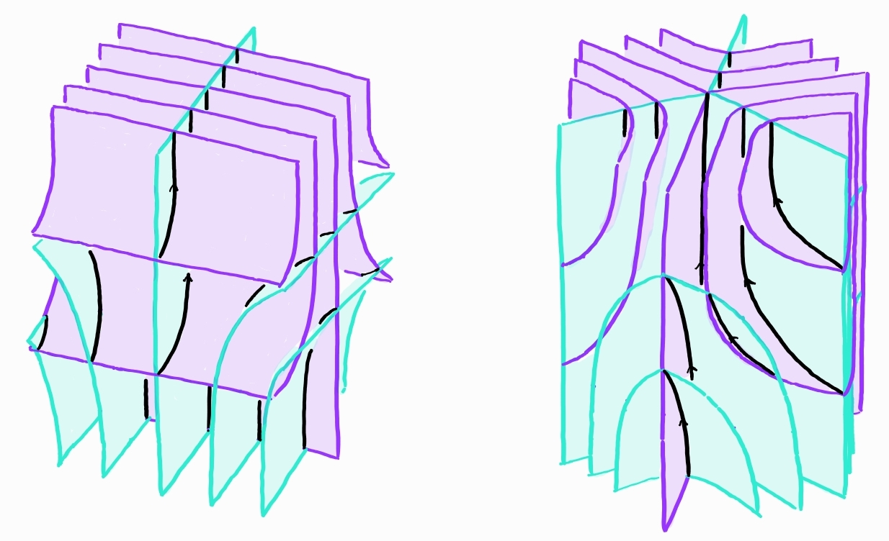

I am a McDuff endowed postdoctoral fellow at Simons Laufer Mathematical Sciences Institute (SLMath).
My research lies in the intersection of low-dimensional topology and dynamics.
My interests include flows and foliations on 3-manifolds, homeomorphisms of surfaces, and related topics.
You can find a list of my preprints and publications here.
In Fall 2026, I will be a distinguished researcher at Tongji University.
You can find my CV here (last updated: 4 Jan 2026).
Email: chicheuk [at] hotmail.com
